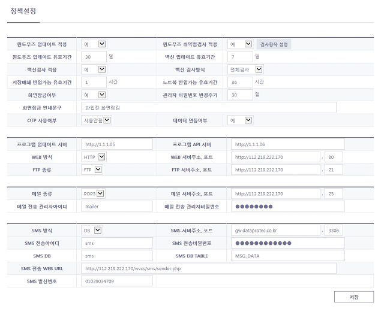

정책설정
정책설정 화면 설명입니다.
일반사항
- 점검 솔루션 정책 및 서버, 메일, SMS 정보를 설정합니다.
- SMS 서버 환경 설정은 OTP 인증 문자 발송을 위한 설정 정보입니다.
- 메일 서버 환경 설정은 메일서버와 POP3 연결을 위한 설정 정보입니다.
1. 정책설정 화면

- 구성 항목
항목 |
상세항목 |
설명 |
VCS 정책설정 |
윈도우즈 업데이트 적용 |
예 : 검사시 윈도우즈 업데이트를 체크합니다. |
아니오 : 검사시 윈도우즈 업데이트를 체크하지 않습니다. |
||
윈도우즈 취약점검사 적용 |
예 : 검사시 윈도우즈 취약점을 체크합니다.(권장) |
|
아니오 : 검사시 윈도우즈 취약점을 체크하지 않습니다. |
||
윈도우즈 업데이트 유효기간 |
윈도우즈 업데이트 유효기간을 입력합니다. 유효기간 경과시 윈도우즈 업데이트후 검사를 진행합니다. |
|
백신 업데이트 유효기간 |
백신 업데이트 유효기간을 입력합니다. 유효기간 경과시 백신을 업데이트후 검사를 진행합니다. |
|
백신검사 적용 |
예 : 검사시 백신 검사를 실행합니다.(권장) |
|
아니오 : 검사시 백신 검사를 실행하지 않습니다. |
||
백신검사 방식 |
빠른검사 : 검사시 백신 검사를 빠른 검사로 진행합니다. |
|
전체검사 : 검사시 백신 검사를 전체 검사로 진행합니다.(권장) |
||
저장매체 반입가능 유효기간 |
저장매체 검사완료후 반입 가능한 기간(시간)을 입력합니다. |
|
노트북 반입가능 유효기간 |
노트북 검사완료후 반입 가능한 기간(시간)을 입력합니다. |
|
화면잠금여부 |
예 : 검사시 다른 기능을 사용할 수 없도록 화면을 잠급니다.(권장) |
|
아니오 : 검사시 다른 기능을 사용할 수 있도록 허용합니다. |
||
관리자 비밀번호 변경주기 |
웹매니저 접속을 위한 관리자 비밀번호 변경주기를 입력합니다. |
|
화면잠금 안내문구 |
화면잠금시 화면에 나타나는 안내문구를 입력합니다. |
|
OTP 사용여부 |
예 : 웹매니저 접속시 OTP 인증을 사용합니다. |
|
아니오 : 웹매니저 접속시 OTP 인증을 사용하지 않습니다. |
||
데이터연동 여부 |
예 : VCS 솔루션과 다른 외부 데이터를 연동합니다. |
|
아니오 : VCS 솔루션과 다른 외부 데이터를 연동하지 않습니다. |
||
APP 서버 환경 설정 |
프로그램 업데이트 서버 |
프로그램 업데이트 서버 주소를 입력합니다. |
프로그램 API 서버 |
프로그램 API 서버 주소를 입력합니다. |
|
WEB 서버환경 설정 |
WEB 방식 |
WEB 방식(http/https)을 선택합니다. |
WEB 서버주소,포트 |
WEB 서버 주소와 포트를 입력합니다. |
|
FTP 서버 환경설정 |
FTP 종류 |
FTP 종류(FTP/SFTP)를 선택합니다. |
FTP 서버주소, 포트 |
FTP 서버주소, 포트를 입력합니다. |
|
메일 서버 환경 설정 |
메일종류 |
메일 종류(POP3/SMTP)를 선택합니다. |
메일 서버주소,포트 |
메일 서버 주소와 포트를 입력합니다. |
|
메일 전송 관리자 아이디 |
메일 전송 관리자 아이디를 입력합니다. |
|
메일 전송 관리자 비밀번호 |
메일 전송 관리자 비밀번호를 입력합니다. |
|
SMS 서버 환경 설정 |
SMS방식 |
DB : DB에 SMS 전송 메세지를 INSERT 합니다. |
WEB : SMS 전송 웹 페이지를 호출합니다. |
||
SMS 서버주소,포트 |
SMS 서버 주소,포트를 입력합니다. |
|
SMS 전송 아이디 |
SMS 전송 아이디를 입력합니다. |
|
SMS 전송 비밀번호 |
SMS 전송 비밀번호를 입력합니다. |
|
SMS DB |
SMS Database 명을 입력합니다. |
|
SMS DB TABLE |
SMS Database Table 명을 입력합니다. |
|
SMS 전송 WEB URL |
SMS 전송 Web Url 을 입력합니다. |
|
SMS 발신번호 |
SMS 발신번호를 입력합니다. |
|
버튼 |
저장 |
정책 및 서버 정보를 저장하고 적용합니다. |
Created with the Personal Edition of HelpNDoc: Free help authoring environment